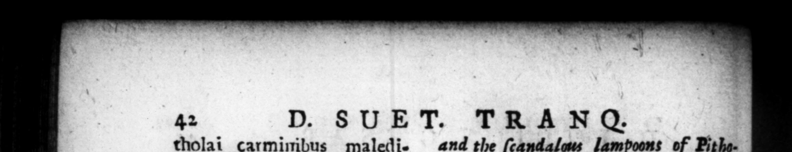

42 tholai carminibus maledicentiſſimis, laceratam exiſtimationem ſuam, civili an imo tulit. 76. Prægravant tamen cetera facta dictaque e jus, ut & abuſus dominatione, & jure cælſus exiſtimetur. Non enim honores modo nimics recepit, ut continuum conſula:um, perpetnam dictaturam 1 morum, inſuper prænomen imperatoris, cognomen patris patrie, ſtatuam inter reges, luggeſtum in orcheſtra: fed & ampliora etiam humano faſtigio decerni ſibi paſſus eſt: ſeuem auream in curia & pro tribunali, tuenſam & ferculum Circenſi jompa, templa, aras, ſimulacra juxta deos, pulvinar, flaminem , Inpercos, appellationem menſis è ſuo nomine. Ac nullos non honores ad libidinem cepit, & dedit. Tertium & quantum conſulatum titulo tenus geſſit, contentus dictaturze poteſtate decretæ cum conſulatibus ſimul : atque utroque anno binos conſules ſubſtituit ſibi in ternos noviſlimos menſes : ita ut medio tempore comitia nulla habuerir, preter tribunorum & ædilium plebis : præfecrctque pro prætoribus conſtituerit, qui præſente ſe res iu banas adminiſtrarent, Pridie autem Kal. Janvarlas repentina conſulis morte ceſſantem honcrem in — adem horas perenti dedit. licentia ſpreto patriæ more, magiſtratus in plures annos ordinavit. Decem pratorits viris conſularia Omamenta tribnit. Civitate dona os, & uoſdam e ſemibarbaris Gallorum recepit in curiam. Præterea monetæ, publiciſq; vectigalibus, peculiares fervos prepoluit. Trium leEionum, quas Alexandriæ D. SU ET. TRAN G. and the ſcandalass lampoons of Pithelaws, 5 highly — . his 76. Yet his ether actions and decls. rations with regard. to the publick, ſe far outweigh all his good 2 that it is thought he abufed his Power, and was very juſtly taken off. For he not only accepted of exceſſi ve honours, 4s the —_— ip every year ſucceſſively, the dictatorſbip for life, the lena of the publick manners; moreover the prenomen of imperator, the title of fas ther of his country, à ſtatue amon$/# the kings, and a throne in the place aſſigned the ſenators in the theatre; but he like» wiſe ſuffered ſome things to be decreed for him, much tos great for the greate of the fons of men; as a golden chair in: ſenate houſe, and upon the bench when he ſat for the tryal of cauſes, a ſtately chariot in the Circenſsan proceſſion, temples. altars, images near the geds, a bed of ſtate in the temples, a peculiar prieſt, and a college of priefts, like oy appoi ntea in honcur of Pan; and that one of the months ſhould be called by his name, He did indeed both aſſume to bimſelf, and grant to ethers all manner of honours at Pleaſure, In his third and fourth conſulſhip, he had but the title of the office, being well contented with the pewer of diftator, which was conferred upon him at the ſame time; and in both the years, be ſubſt'tuted other conſuls in his room, for the three laſt months; ſo that in the mean while he held no aſſemblies of the people, for the choice of magiſtrates, excepting only tribunes and ediles of the commons, and appointed officers under the name of prefetts, inſtead of the pre tors, to manage the affairs of the city in his abſence. And he conferred the honour of the conſulſhip, which was „ the ſudden death of one of the conſuls, t day before the firſt of Famuary, upon 4 entleman, that made ſuit to him for it, ; a few hours. And with the ſame li. centious freedom, in defiance to the conſtant uſage of his country, he nominated the magiſtrates for ſeveral years to come. He granted the diſtinguiſhing badges of the conſular dignity to ten prætorian gen. tlemen; and choſe into the ſenate, mw TCH % p * Y [ _ 9 CI * * 8 - — ny eo as 4 = CS a r * FF r o "£2 | — 1 Ve = . gu Sl wy A * n 1 . 3 N © = 2 2. 2 2 m >» Ip .
